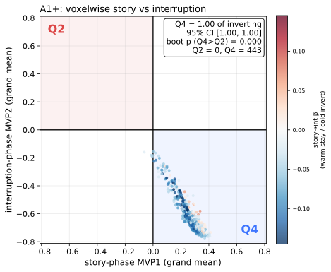
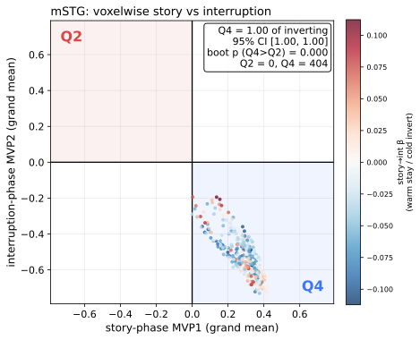
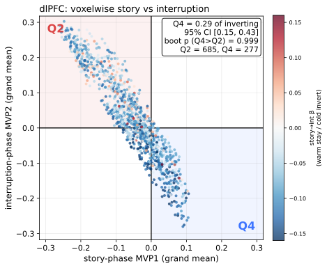
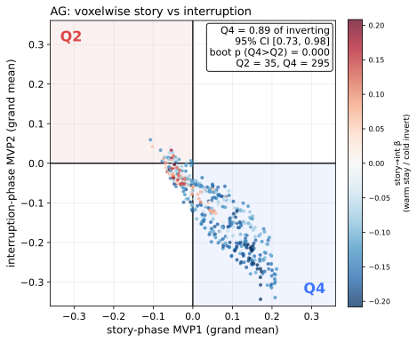
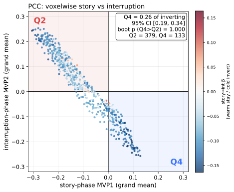
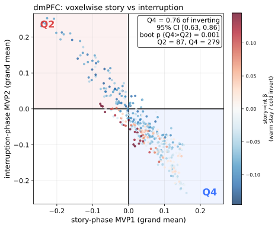
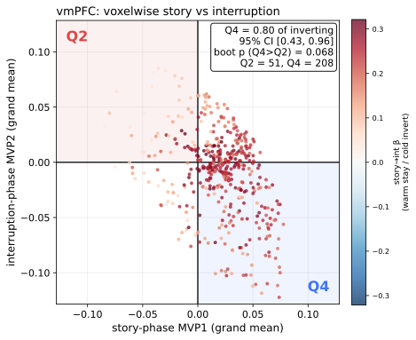
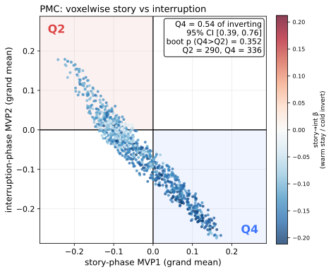
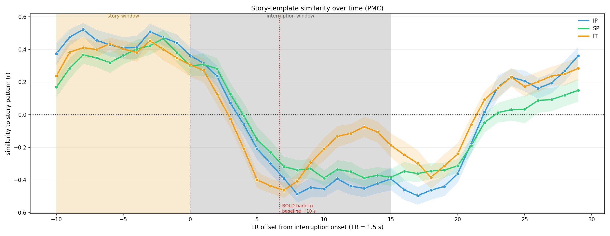
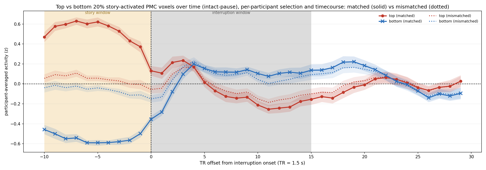

primary auditory cortex (A1+)
This report examines whether the story-to-interruption pattern inversion in posterior medial cortex (PMC) could be an artifact of the hemodynamic post-stimulus undershoot, in three analyses. Analysis 1 asks whether the voxels that invert do so in the one-sided, story-positive-only direction a pure undershoot predicts, or whether rises and drops are instead comparable in number. Analysis 2 asks whether the inversion resolves on the ~10–20 s timescale of a hemodynamic undershoot or persists across the whole interruption. Analysis 3 follows the most and least story-activated voxels of each participant through the interruption, asking in particular whether the story-phase bottom-most voxels — which an undershoot account leaves no reason to change — rise into sustained positive activity.
Analysis 1 is applied to three control regions outside the default-mode network — primary auditory cortex (A1+), middle superior temporal gyrus (mSTG), and dorsolateral prefrontal cortex (dlPFC) — and to the five pre-selected default-mode regions reported elsewhere in this supplement: angular gyrus (AG), posterior cingulate cortex (PCC), dorsomedial prefrontal cortex (dmPFC), ventromedial prefrontal cortex (vmPFC), and PMC. Analyses 2 and 3 focus on PMC. Throughout, one volume of data is one repetition time (TR = 1.5 s).
The hemodynamic-undershoot test reported for posterior medial cortex (PMC) in Result 3.3 is applied here to the broader pre-selected region-of-interest (ROI) set: three control regions outside the default-mode network — primary auditory cortex (A1+), middle superior temporal gyrus (mSTG), and dorsolateral prefrontal cortex (dlPFC) — and the five pre-selected default-mode regions reported elsewhere in this supplement (angular gyrus, AG; posterior cingulate cortex, PCC; dorsomedial prefrontal cortex, dmPFC; ventromedial prefrontal cortex, vmPFC; and PMC). Windows, similarity logic, and the inferential statistic are identical to Result 3.3.
Around every interruption onset we built two multivoxel patterns (MVPs) per ROI: MVP1, the mean over the ten repetition times (TRs; TR = 1.5 s) ending one TR before onset (story window), and MVP2, the mean over ten TRs starting five TRs after onset (interruption window), both from the whole-run z-scored data in which each voxel was z-scored across the entire run. MVP1 and MVP2 were averaged across all interruption epochs and all pooled participants (intact-pause, scrambled-pause, intact theory-of-mind), giving one grand-mean value per voxel; each dot in the scatter is one voxel at (grand-mean MVP1, grand-mean MVP2), colored by its within-participant story-to-interruption regression slope (warm = stays the same sign, cold = inverts). A pure undershoot drives story-positive voxels below baseline during the interruption (Q4: MVP1 > 0, MVP2 < 0) without the converse flip of story-negative voxels (Q2: MVP1 < 0, MVP2 > 0), so its signature is an excess of Q4 over Q2 voxels.
Because the grand mean averages over participants, we summarized the asymmetry as the Q4 fraction of inverting voxels, Q4 / (Q2 + Q4), and tested it with a participant bootstrap (5,000 resamples of the pooled participants with replacement, which keeps each participant’s within-subject spatial voxel dependence intact and propagates the subject-level sampling variability the grand mean averages over). The pure-undershoot prediction is a Q4 fraction reliably above 0.5 (95% bootstrap confidence interval excluding 0.5); a confidence interval spanning 0.5 (Q2 ≈ Q4) rejects the pure-undershoot account.
| ROI | voxels | Q2 | Q4 | pooled Q2:Q4 ratio (reference) | Q4 fraction of inverting voxels [95% participant-bootstrap CI] | bootstrap p (Q4 > Q2, one-sided) | sig | consistent with undershoot? (CI above 0.5) |
|---|---|---|---|---|---|---|---|---|
| A1+ | 447 | 0 | 443 | 0.000 | 1.000 [1.000, 1.000] | 2.00e-04 | *** | yes |
| mSTG | 405 | 0 | 404 | 0.000 | 1.000 [1.000, 1.000] | 2.00e-04 | *** | yes |
| dlPFC | 1163 | 685 | 277 | 2.473 | 0.288 [0.145, 0.427] | 0.9994 | n.s. | no |
| AG | 478 | 35 | 295 | 0.119 | 0.894 [0.726, 0.985] | 2.00e-04 | *** | yes |
| PCC | 599 | 379 | 133 | 2.850 | 0.260 [0.186, 0.340] | 1.0000 | n.s. | no |
| dmPFC | 405 | 87 | 279 | 0.312 | 0.762 [0.627, 0.861] | 8.00e-04 | *** | yes |
| vmPFC | 440 | 51 | 208 | 0.245 | 0.803 [0.425, 0.957] | 0.0682 | n.s. | no |
| PMC | 972 | 290 | 336 | 0.863 | 0.537 [0.392, 0.761] | 0.3523 | n.s. | no |
Pre-selected ROIs are split into a control block (A1+, mSTG, dlPFC) and a default-mode block (AG, PCC, dmPFC, vmPFC, PMC), separated by a horizontal rule. Significance markers follow the standard convention (* p < 0.05, ** p < 0.01, *** p < 0.001, otherwise n.s.). The final column reads “yes” only when the Q4 fraction of inverting voxels is reliably above 0.5 (95% bootstrap confidence interval excluding 0.5), the operational signature of a pure hemodynamic undershoot. Auditory cortex (A1+) shows this Q4-dominant asymmetry, whereas in PMC the confidence interval spans 0.5: the voxels whose activity rises from the story to the interruption (Q2) are comparable in number to those whose activity drops (Q4), which is the symmetric pattern expected of a pattern reconfiguration and not of a one-sided undershoot.








Each panel shows one dot per voxel at its grand-mean story-window value (MVP1, x) versus interruption-window value (MVP2, y), pooled across all epochs and participants and colored by the within-participant story-to-interruption slope (warm = stays, cold = inverts). Q2 (upper-left) and Q4 (lower-right) are the inversion quadrants; the annotation gives the Q4 fraction of inverting voxels, its 95% participant-bootstrap confidence interval, and the one-sided bootstrap p that it exceeds 0.5.
Where the quadrant counts locate a voxel’s grand-mean activity, the dot colors track its behavior across epochs: whether a voxel holds its activity level from the story window into the interruption window, or reverses it. A voxel that runs high during a story stretch and low during the interruption that follows it flips; one whose interruption activity tracks its story activity stays.
Each voxel was assigned a slope β, the ordinary-least-squares regression of its interruption-window value (MVP2) on its story-window value (MVP1), with each (participant, interruption epoch) pair as one observation. Each participant’s values were first centered on that participant’s own mean across epochs, so that β reflects epoch-to-epoch fluctuation within a participant; the centered cross-products were then pooled over all participants and epochs (intact-pause, scrambled-pause and intact theory-of-mind). Voxels with β < 0 flip and are colored cold (blue), voxels with β > 0 stay and are colored warm (red); β sets the color scale of the scatters above.
A pattern change driven by a hemodynamic undershoot would be transient. The blood-oxygen-level-dependent (BOLD) signal follows a stereotyped hemodynamic response function: after an event it rises to a peak around 5–6 s and returns toward baseline by about 10 s, followed by a slow post-stimulus undershoot that resolves within about 15–30 s. If the story-to-interruption inversion were such an undershoot it would drop below baseline and rise back within roughly 10–20 s. The figure plots, TR by TR around interruption onset, the leave-one-participant-out similarity between each participant’s PMC pattern and the group story-phase template (the ten TRs before onset), separately for the intact-pause (IP), scrambled-pause (SP) and intact theory-of-mind (IT) conditions. The beige band marks the 10-TR story window (pre-onset) and the light-gray band the 15-TR interruption window.
The similarity is positive during the story window (beige), turns negative right after onset (the inversion), and stays negative across the whole interruption (gray) — out to the shortest interruption, 15 TRs (~22 s) — well past the dotted red mark at ~10 s where a hemodynamic response would have returned to baseline. It only rises back toward the story pattern when the story resumes.

Hemodynamic-response timing from the fMRI literature: e.g. the BOLD post-stimulus undershoot review (van Zijl et al., 2012, NeuroImage).
This analysis asks whether the voxels a participant drives hardest during a story stretch, and those it drives least, reverse their activity during the interruption that follows. In the intact-pause condition, we ranked each participant’s PMC voxels by that participant’s own story-phase activity (mean over the ten TRs before onset) at each interruption epoch, took the top 20% and bottom 20% (194 of 972 voxels each), and followed them in that same participant’s timecourse around onset. Each participant’s timecourse was averaged across epochs, then averaged across participants; the shaded band is ±1 standard error (SE) across participants.
Two selections are overlaid. The matched selection (solid) ranks voxels on the epoch being plotted. The mismatched selection (dotted) ranks them on each of 100 epochs drawn at random from that participant’s remaining epochs and averages the 100 resulting timecourses, so that any separation it shows reflects a stable property of those voxels across epochs. The mismatched pool comprises all off-diagonal epoch pairs, the convention used for matching versus mismatching in Result 2.2 and elsewhere in this supplement. Ranking used the voxels with finite values for that participant.

Red = top voxels, blue = bottom voxels; solid = matched (dots ● top, crosses × bottom), dotted = mismatched; shaded bands are ±1 SE across participants. Beige = 10-TR story window (pre-onset), gray = 15-TR interruption window. The two sets cross over cleanly at onset: the top voxels start high during the story and fall below zero during the interruption, and — the point that bears on the undershoot account — the bottom voxels, deeply negative throughout the story, rise above zero and hold a sustained positive level across the interruption window rather than drifting back toward baseline. A post-stimulus undershoot pulls story-positive voxels down and gives no reason for story-negative voxels to rise, so this upward, sustained excursion of the bottom-most voxels is not something an undershoot can produce. The mismatched selection shows a smaller story-window separation (as expected when voxels are not selected on the plotted epoch) yet the same-signed interruption crossover persists, indicating the inversion is a stable across-epoch property of the same voxels rather than a within-epoch selection artifact.